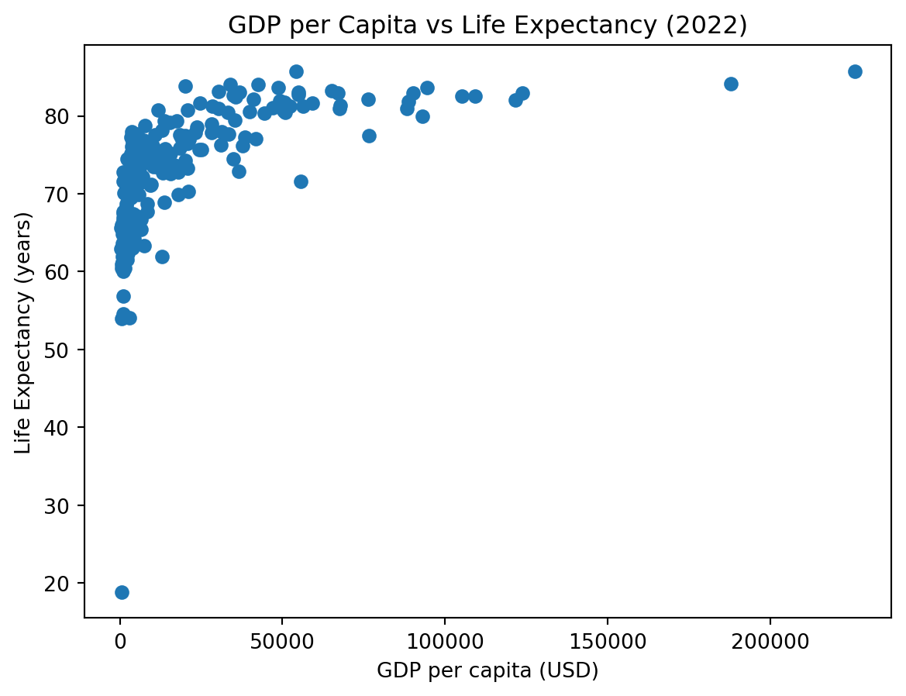
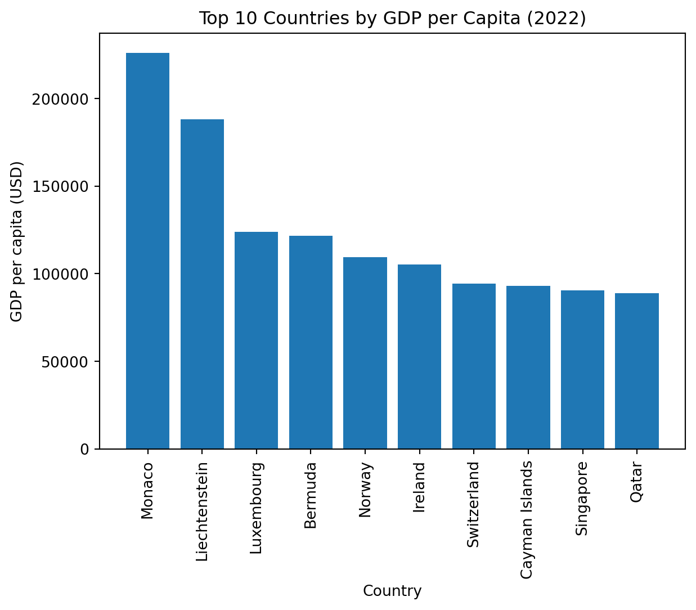

(217, 14)DATASCI 350 - Assignment 05: WDI 2022 Report
1 Exploratory Data Analysis (EDA)
In this section, we explore three indicators: GDP per capita, life expectancy, and unemployment rate.
1.1 Summary of missing values
adult_literacy_rate 172
income_inequality 148
primary_school_enrolment_rate 55
education_expenditure_gdp_share 54
inflation_rate 39
exports_gdp_share 35
unemployment_rate 31
health_expenditure_gdp_share 25
measles_immunisation_rate 24
gdp_growth_rate 8
dtype: int641.2 1) GDP per capita (gdp_per_capita)
count 209.000000
mean 21142.747417
std 31040.300784
min 302.992505
25% 2899.160475
50% 7655.594210
75% 28360.304147
max 226052.001905
Name: gdp_per_capita, dtype: float64( country gdp_per_capita
130 Monaco 226052.001905
114 Liechtenstein 188055.003235
116 Luxembourg 123719.658916
21 Bermuda 121613.939984
147 Norway 109269.520580
93 Ireland 105190.685953
188 Switzerland 94394.510680
36 Cayman Islands 93030.705145
171 Singapore 90299.069464
159 Qatar 88701.468976,
country gdp_per_capita
112 Liberia 744.617175
44 Congo, Dem. Rep. 687.738588
143 Niger 609.745148
119 Malawi 604.269740
134 Mozambique 578.251664
176 Somalia, Fed. Rep. 573.141166
118 Madagascar 503.514533
37 Central African Republic 467.359825
0 Afghanistan 357.261153
31 Burundi 302.992505)Finding: GDP per capita varies widely across countries, with a long right tail (a few very high-income countries).
1.3 2) Life expectancy (life_expectancy)
count 217.000000
mean 73.108020
std 7.942539
min 18.818000
25% 67.788000
50% 74.160976
75% 78.531000
max 85.746000
Name: life_expectancy, dtype: float64( country life_expectancy
130 Monaco 85.746000
164 San Marino 85.708000
114 Liechtenstein 84.121951
4 Andorra 84.016000
98 Japan 83.996341
69 French Polynesia 83.859000
86 Hong Kong SAR, China 83.660976
188 Switzerland 83.604878
75 Gibraltar 83.517000
10 Australia 83.200000,
country life_expectancy
20 Benin 60.475
81 Guinea 60.432
143 Niger 60.398
122 Mali 60.035
178 South Sudan 57.203
111 Lesotho 56.812
38 Chad 54.528
144 Nigeria 54.079
176 Somalia, Fed. Rep. 53.931
37 Central African Republic 18.818)Finding: Life expectancy is more concentrated than GDP per capita, but still shows large differences across countries.
1.4 3) Unemployment rate (unemployment_rate)
count 186.000000
mean 7.196930
std 5.845956
min 0.130000
25% 3.484750
50% 5.337000
75% 9.194500
max 36.472000
Name: unemployment_rate, dtype: float64( country unemployment_rate
63 Eswatini 36.472
177 South Africa 33.268
54 Djibouti 26.272
213 West Bank and Gaza 24.420
25 Botswana 23.615
70 Gabon 20.319
45 Congo, Rep. 20.131
136 Namibia 19.615
184 St. Vincent and the Grenadines 19.277
113 Libya 19.238,
country unemployment_rate
175 Solomon Islands 1.475
14 Bahrain 1.265
108 Lao PDR 1.209
38 Chad 1.081
192 Thailand 0.940
31 Burundi 0.909
129 Moldova 0.909
143 Niger 0.403
33 Cambodia 0.245
159 Qatar 0.130)Finding: Unemployment rates vary across countries and may include outliers (very high unemployment).
1.5 Relationships between indicators (quick check)
| gdp_per_capita | life_expectancy | unemployment_rate | |
|---|---|---|---|
| gdp_per_capita | 1.000000 | 0.570982 | -0.200769 |
| life_expectancy | 0.570982 | 1.000000 | -0.115117 |
| unemployment_rate | -0.200769 | -0.115117 | 1.000000 |
Finding: GDP per capita is typically positively associated with life expectancy (r > 0), while unemployment may not have a strong linear relationship with the other two. ## Visualisations
1.6 Relationship between GDP per capita and Life Expectancy

As shown in Figure 1, countries with higher GDP per capita tend to have higher life expectancy.
1.7 Top 10 Countries by GDP per Capita

Figure Figure 2 highlights the substantial differences among the highest-income countries. ## Key Statistics Table
Table Table 1 summarizes key descriptive statistics for the three indicators used in the EDA.
| count | mean | std | min | 25% | 50% | 75% | max | |
|---|---|---|---|---|---|---|---|---|
| gdp_per_capita | 209.0 | 21142.747417 | 31040.300784 | 302.992505 | 2899.160475 | 7655.594210 | 28360.304147 | 226052.001905 |
| life_expectancy | 217.0 | 73.108020 | 7.942539 | 18.818000 | 67.788000 | 74.160976 | 78.531000 | 85.746000 |
| unemployment_rate | 186.0 | 7.196930 | 5.845956 | 0.130000 | 3.484750 | 5.337000 | 9.194500 | 36.472000 |
As shown in Table 1, GDP per capita has the largest spread, while life expectancy is more concentrated. Figures Figure 1 and Figure 2 provide visual context for these patterns. bibliography: references.bib The data in this report come from the World Bank World Development Indicators (WDI) dataset (World Bank 2024b).
GDP per capita is measured as current US dollars (indicator code NY.GDP.PCAP.CD) (World Bank 2024a).
References
World Bank. 2024a. “GDP Per Capita (Current US$) - NY.GDP.PCAP.CD.” World Bank Data Indicator Metadata.
———. 2024b. “World Development Indicators.” World Bank Open Data.